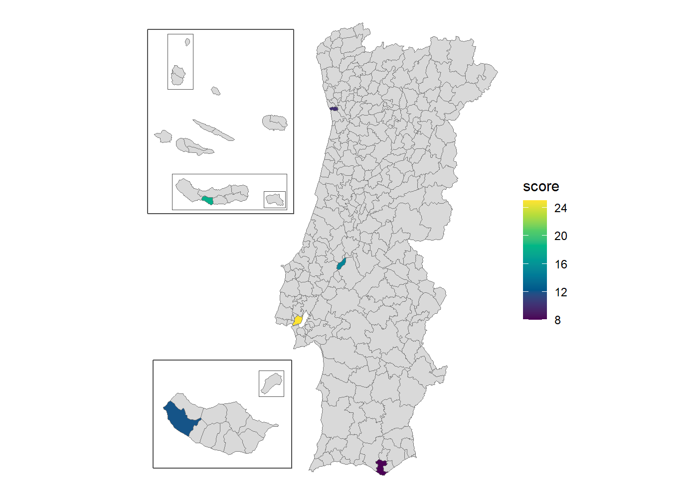

This is a package centered around Portuguese spatial data. The main features are:
- Official downloads: full-resolution CAOP, server-side queries against the DGT OGC API, and INE census geographies (BGRI subsecções and secções, 1 km grid).
- A join layer: match data by code or by name, without fighting accents, duplicate names or codes from older vintages.
- Ready-to-map boundaries: pre-simplified sf objects from freguesia up to NUTS 1, plus health boundaries, with Açores and Madeira as optional insets.
- Vintages: codes and names for four freguesia maps (2001, 2011, 2013 and 2025), with boundaries for the 2013 and 2025 ones, plus three NUTS revisions and the health geography before and after the 2024 reform. Crosswalks convert freguesia data between maps. Each of these changes on its own schedule, so each has its own vintage argument.
Installation
# From CRAN
install.packages("geopt")
# From GitHub
# install.packages("pak")
pak::pak("c-matos/geopt")A map in one line
library(geopt)
# Custom data
df <- data.frame(
concelho = c("PORTO", "Lisboa", "golega", "Faro", "Lagoa (RAA)", "Calheta (RAM)"),
score = c(10, 25, 15, 8, 18, 12)
)
# Plot a map
plot_pt(df, value = "score", by = c(municipio = "concelho"))
#> get_map: 302 boundaries have no data row (NA fill).
- Names were matched with the bundled spatial data, ignoring accents and case. The qualifiers picked the right unit: Lagoa (RAA) is the one in the Açores, not Faro’s, and Calheta (RAM) the one in Madeira, not São Jorge’s.
- The archipelagos are there as insets
- Return value is a plain ggplot you can customise.
Add renderer = "echarts" for an interactive htmlwidget instead.
Learn more
Start with vignette("geopt"), then pick the guide for the task at hand:
-
Change the island layout, draw frames around the islands, or use tmap or echarts4r instead of ggplot2:
vignette("map-compositions") -
Get your data onto the map by code or by name, including ambiguous and misspelled names:
vignette("joining-data") -
Map ULS, regiões de saúde or ACES:
vignette("health-geographies") -
Work with older boundaries, or convert freguesia data across reorganizations:
vignette("vintages") -
Download full-resolution CAOP, INE census data, or query DGT’s online service:
vignette("downloading-data")
Curious how it works? The website has articles on how the bundled data is built and how name matching works.
Data sources
- Administrative boundaries: CAOP — Carta Administrativa Oficial de Portugal, Direção-Geral do Território (DGT).
-
Census geographies: BGRI and the 1 km grid, Instituto Nacional de Estatística (INE). Downloaded on demand by
get_censos(), not bundled. -
NUTS and health geographies: see
?pt_nuts_codesand?pt_health_codes.
geopt is not affiliated with DGT or INE.